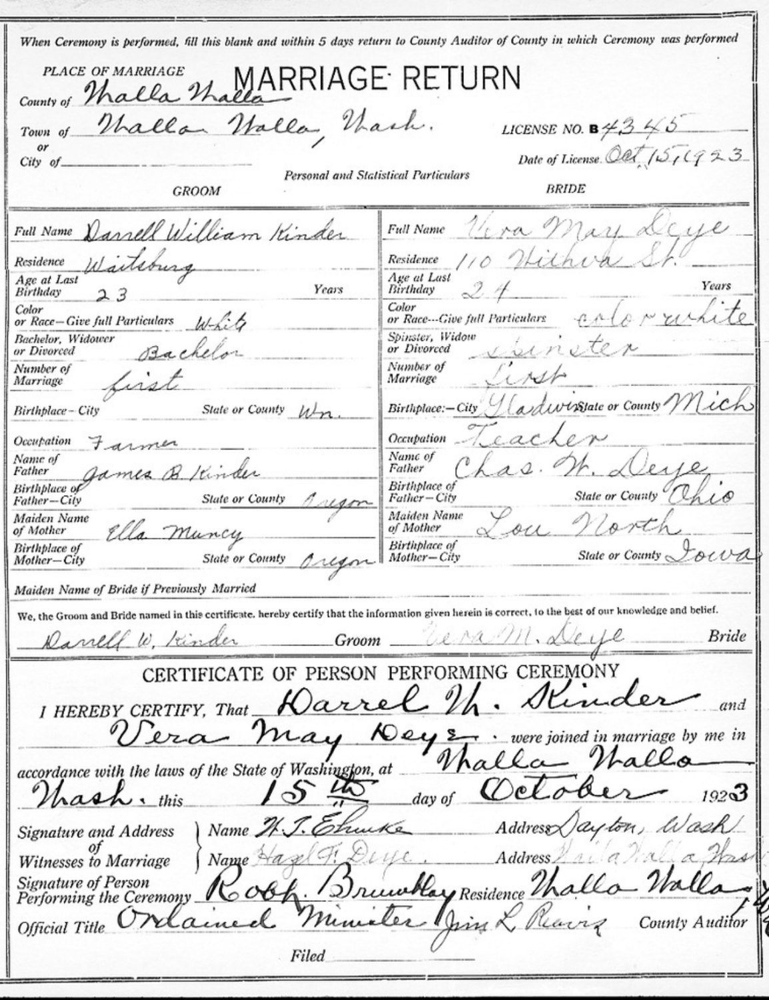

<meta charset="utf-8">
<meta name="viewport" content="width=device-width, initial-scale=1">
<meta name="robots" content="noindex">
<title>The Deye Side: A German Name Out of Ohio</title>
<link rel="stylesheet" href="style.css">

<nav>
  <a href="index.html">Home</a>
  <a href="kinder.html">Kinder side</a>
  <a class="here" href="deye.html">Deye side</a>
</nav>

<main>
<h1>The Deye Side</h1>
<p class="sub">Alan's mother's people. A German family named Deye out of the Ohio farm country, joined to an old English-descended line with a Civil War soldier in it, working their way west a state at a time until a schoolteacher married a farmer in Walla Walla.</p>

<h2>The schoolteacher</h2>
<p>Alan's mother was <strong>Vera May Deye</strong>, born about <strong>1899 in Gladwin County, Michigan</strong>, a lumbering county up in the middle of the state <span class="badge probable">Probable</span>. By the time she was grown the family had moved clear across the country to <strong>Walla Walla, Washington</strong>, where Vera became a <strong>schoolteacher</strong>. On <strong>October 15, 1923</strong>, she married a young wheat farmer from nearby Waitsburg named <strong>Darrell W. Kinder</strong> (his family is the <a href="kinder.html">other side of this site</a>) <span class="badge proven">Proven</span>. Two years later Alan was born. Vera lived a long life, dying in 1995 at the age of 96, and is buried with Darrell near Renton, Washington.</p>

<p>Their marriage return still exists, and it's a small goldmine, because on one page, in the couple's own answers, it confirms <em>both</em> families at once: Darrell, farmer of Waitsburg, son of James B. Kinder and Ella Muncy; and Vera, teacher, born in Michigan, daughter of <strong>Charles W. Deye of Ohio</strong> and <strong>Lou North of Iowa</strong>. Two whole generations, nailed down by a single 1923 document.</p>

<figure>
  
  <figcaption>The marriage return, Walla Walla County, October 15, 1923. Groom Darrell William Kinder, farmer of Waitsburg, parents James B. Kinder and Ella Muncy. Bride Vera May Deye, teacher, born in Michigan, parents Charles W. Deye (Ohio) and Lou North (Iowa). One page, both families. Washington State Digital Archives.</figcaption>
</figure>

<h2>A German name out of Ohio</h2>
<p>The Deye name is <strong>German</strong>. Vera's father, <strong>Charles William Deye</strong>, was born <strong>May 16, 1868, in Shelby County, Ohio</strong>, and lived to 1946, dying in Walla Walla <span class="badge proven">Proven</span>. Shelby County, up in western Ohio, was settled starting in the 1830s by German and Alsatian immigrants who came in over the Erie Canal chasing cheap farmland at a dollar and a quarter an acre.</p>

<p>The oldest Deye the records pin down is Charles's father, <strong>Jacob S. Dey</strong>, born in <strong>Shelby County, Ohio in 1834</strong> <span class="badge proven">Proven</span>. Notice the spelling, the older stone reads <strong>"Dey,"</strong> and the children standardized it to "Deye" later, the kind of small drift you see constantly with German names in America. Jacob married Mary Myers in 1856 and farmed in Ohio his whole life.</p>

<p>Behind Jacob is the immigrant, and this is where the free trail ends. Because Jacob was already born in Ohio in 1834, the actual man who crossed the Atlantic was <strong>his father</strong>, a German settler who reached Shelby County around 1832 <span class="badge probable">Probable</span>. His name isn't on the free records yet, the census that would show teenage Jacob in his father's household sits behind a login, so for now the German immigrant is real but unnamed, one generation out of reach. The line documents cleanly to <strong>Ohio in 1834</strong>, with Germany just behind it.</p>

<h2>The other half: the North line and a Civil War corporal</h2>
<p>Vera's mother was <strong>Lou May North</strong>, born <strong>October 15, 1876, in Hampton, Iowa</strong> (Vera's middle name, "May," came straight from her) <span class="badge proven">Proven</span>. The North line is English-descended and, as it happens, reaches back the furthest of anyone on Alan's mother's side.</p>

<p>Lou's father was <strong>Daniel Martin North</strong>, born <strong>January 6, 1843, in Kokomo, Indiana</strong> <span class="badge proven">Proven</span>. He was a <strong>Civil War soldier</strong>, a corporal in Company H of the <strong>32nd Iowa Infantry</strong>, and after the war he farmed in Iowa and married Rachel Penny in 1866. His own father, <strong>Layton North, born 1809</strong>, is named in the family record, which pushes this line back to <strong>Indiana in the early 1800s</strong> <span class="badge probable">Probable</span>.</p>

<h2>The path west</h2>
<p>Put the pieces together and Alan's mother's family made the classic slow American drift, one state per generation. The Deyes started in <strong>Ohio</strong>. Charles Deye moved to <strong>Iowa</strong>, where he married Lou North, whose people were Indiana-and-Iowa folks. The young couple then pushed up to the <strong>Michigan</strong> lumber frontier, where their daughters, including Vera, were born in the 1890s. And by the early 1900s the whole family had gone all the way out to <strong>Walla Walla, Washington</strong>, where Charles and Lou are buried, and where their schoolteacher daughter married into the Kinder wheat-ranching family. Ohio to Iowa to Michigan to Washington, and then the two sides of Alan's family, the Oregon Trail Kinders and the German Deyes, finally met.</p>

<h2>How far back it goes, honestly</h2>
<p>The <strong>Deye</strong> line is proven to <strong>Jacob Dey, born 1834 in Shelby County, Ohio</strong>, with a German immigrant father just behind him, real but not yet named on the free record. The <strong>North</strong> line is proven to <strong>Daniel Martin North, born 1843 in Indiana</strong>, and probably reaches one more rung to Layton North around 1809. Both are honest, and both have a clear next step: a single free census pull would likely name the German immigrant and confirm Vera's Michigan birth in her own record.</p>

<h2>The paper trail</h2>
<ul class="docs">
  <li><a href="https://digitalarchives.wa.gov/Record/View/563E88140A713E688EFC77BB72B74D0D">Kinder-Deye marriage record, 1923 (Washington State Digital Archives)</a><span class="doc-what">The scanned marriage return embedded above. Confirms both families in the couple's own words. Free image download.</span></li>
  <li><a href="https://www.findagrave.com/memorial/169861030/vera-kinder">Vera May (Deye) Kinder, 1899-1995</a><span class="doc-what">Alan's mother. Michigan-born schoolteacher; buried at Renton, Washington with Darrell.</span></li>
  <li><a href="https://www.findagrave.com/memorial/75377998/charles-william-deye">Charles William Deye, 1868-1946</a><span class="doc-what">Vera's father. Born Shelby County, Ohio; died Walla Walla. Headstone photo.</span></li>
  <li><a href="https://www.findagrave.com/memorial/75378052/lou_may-deye">Lou May (North) Deye, 1876-1964</a><span class="doc-what">Vera's mother. Born Hampton, Iowa; the source of Vera's middle name.</span></li>
  <li><a href="https://www.findagrave.com/memorial/17939203/jacob_s-dey">Jacob S. Dey, 1834-1898</a><span class="doc-what">The earliest documented Deye, born Shelby County, Ohio. Note the "Dey" spelling on the stone.</span></li>
  <li><a href="https://www.findagrave.com/memorial/14258191/mary-irene-schnasse">Mary Irene (Deye) Schnasse, 1897-1988</a><span class="doc-what">Vera's older sister, documented born in Gladwin, Michigan, the record that confirms the family was in Michigan when Vera was born.</span></li>
  <li><a href="https://www.findagrave.com/memorial/157713251/daniel-martin-north">Daniel Martin North, 1843-1907</a><span class="doc-what">Vera's grandfather: corporal, Co. H, 32nd Iowa Infantry, Civil War. Headstone and military record.</span></li>
</ul>

<div class="footer"><p><a href="index.html">Back to the family</a> &middot; <a href="kinder.html">Back to the Kinder side</a></p></div>
</main>
